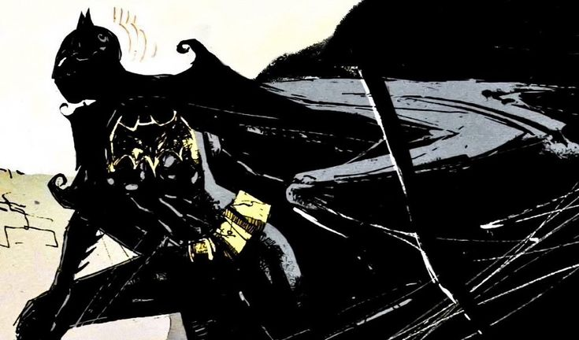
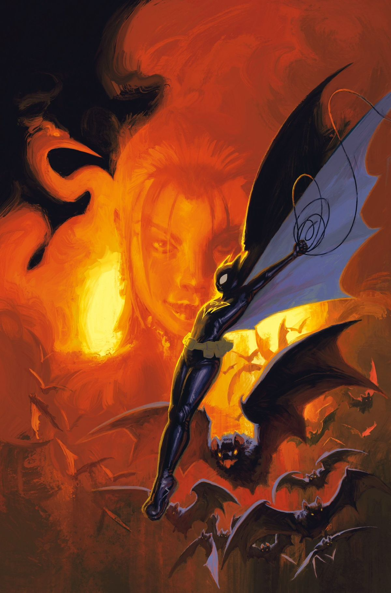

Cassandra Cain is a member of the Bat-Family as a protégé and adoptive daughter of Batman. The daughter of assassins David Cain and Lady Shiva, she was raised to become the greatest weapon for the League of Assassins. However, horrified from her first killing, she fled to the Batman family for protection. Becoming the fourth claimant of the Batgirl identity, she helped him and Tim Drake protect Gotham. Cassandra has also used other identities, including Black Bat and Orphan.Trained by her father, assassin David Cain, to be the ultimate martial artist and assassin, Cassandra was not taught to speak. Instead, the parts of her brain normally used for speech were trained so she could read other people's movements and body language and predict, with uncanny accuracy, their next move. This ability lives up to her namesake; Cassandra in Greek mythology had the gift of seeing into the future, but was cursed so that nobody would ever believe her predictions. This closely relates to her capability of 'seeing' her opponents' next move at the cost of being (initially) unable to speak. This also caused her brain to develop learning functions different from most, a form of dyslexia that hampers her ability to read and write.
In 2000, Cassandra became the first Batgirl to get her own ongoing self-titled comic book series (the Barbara Gordon Batgirl having been featured in a couple of one-shot releases). A telepath "rewired" her brain to think with words and understand English (although speaking properly took longer, and she still could not read or write) at the cost of her ability to predict and read people. This left her unable to defend herself in a fight, as that part of her style relied completely on her ability to read moves, not the "strategies, patterns, and tricks" employed by Batman and most other martial artists. Fearing that she would meet a fate similar to former Robin Jason Todd, Batman refused to let Cassandra wear the Batgirl costume and patrol the city until she could learn adequate defensive skills, which he estimated would take at least a year of work. She soon discovered that assassin Lady Shiva could read people like she used to be able to, and asked her to reteach her. Lady Shiva accepted, on the condition that in a year they would have a duel to the death. Knowing that she would never kill again and would most assuredly lose, but preferring to be "perfect for a year" rather than "mediocre for a lifetime", Cassandra accepted and Lady Shiva retaught her in a night.